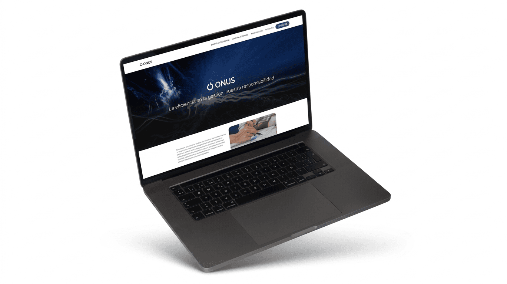
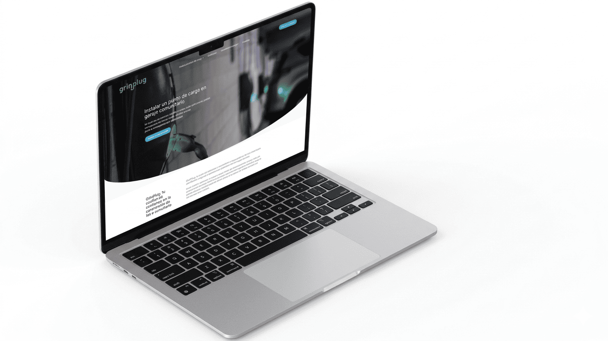
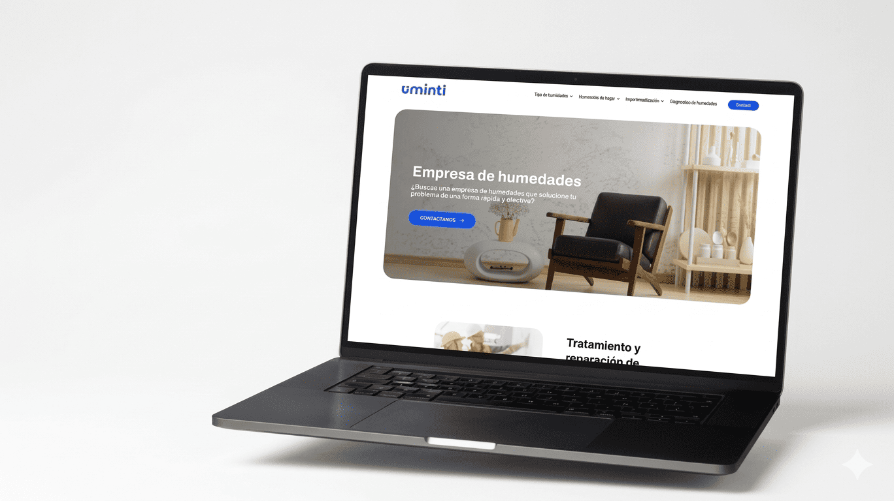
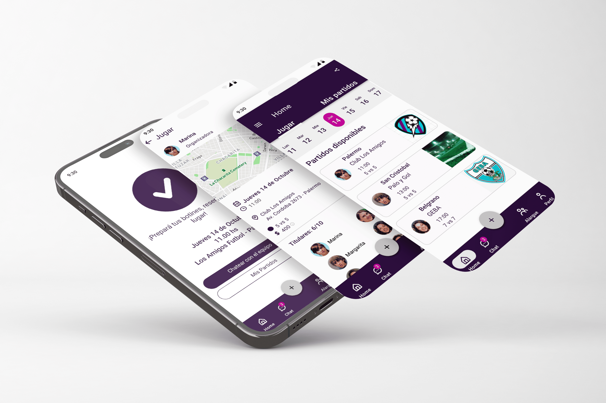

Daiana
Ciaramella
Tester QA Manual | UX UI
- Manual Testing
- Regression Testing
- Bug Reporting
- UX-Oriented QA
- Web App Testing
Cerrando la brecha entre el diseño y la calidad del software
Vengo del diseño UX/UI y el desarrollo Frontend, lo que me dio una perspectiva que pocos QA tienen: entiendo cómo se construye lo que después voy a romper. Esa mirada integral me permite detectar no solo bugs funcionales sino inconsistencias de experiencia que impactan directamente al usuario final.
Con más de 3 años en entornos digitales, me especializo en testing funcional, diseño y ejecución de test cases, regression testing y gestión de defectos. Colaboro en equipos ágiles validando que el producto cumpla tanto los requerimientos técnicos como la experiencia esperada por el usuario.
Proyectos QA
Testing funcional, exploratorio y de API aplicado a productos reales.
Proyectos
Diseño UX/UI: de la investigación al flujo final.

Diseño de identidad visual y experiencia de usuario para Onus Solutions, incluyendo definición de marca, paleta de colores y diseño web enfocado en claridad de contenido y navegación.

Diseño integral de una plataforma de carga eléctrica, definiendo flujos y arquitectura del producto para perfiles de usuario complejos.

Diseño de identidad visual y experiencia web para un servicio especializado, enfocado en claridad de comunicación y optimización de flujos de conversión.

Investigación, definición de producto y diseño UX/UI de una app orientada a la organización de partidos de fútbol femenino y generación de comunidad.
Habilidades
Herramientas y prácticas que uso todos los días entre QA y UX/UI.
QA Manual
- Test Case Design
- Defect Reporting
- Regression Testing
- Exploratory Testing
- Metodologías Ágiles
Técnico
- Postman / API Testing
- SQL Básico
- Git / GitHub
- Vercel / Deployment
- Chrome DevTools
UX & Accesibilidad
- Figma / Diseño UX UI
- Pautas WCAG 2.1
- Axe DevTools
- Usability Testing
- Evaluación Heurística